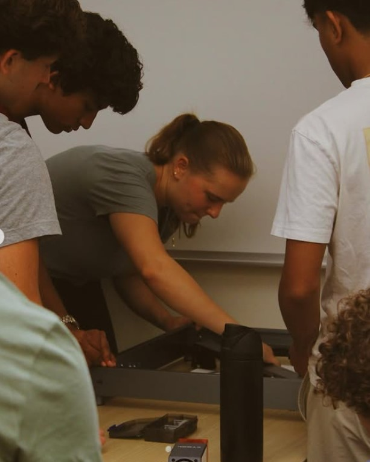
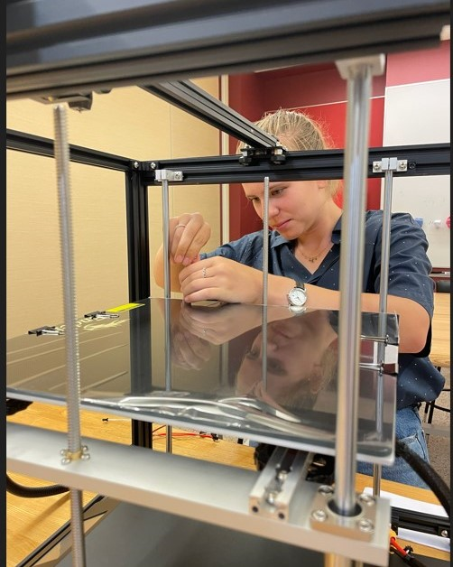
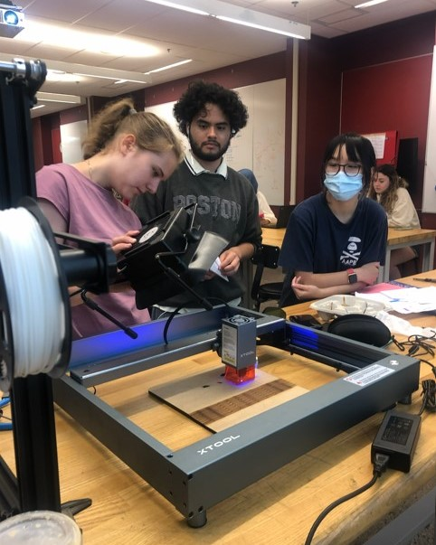

Work Description
All three years, I led the Manufacturing & Engineering cohort and developed my own curriculum to teach high school students CAD, 3D Printing, Laser Cutting and Arduino circuits. In addition to the cohorts, IDEA challenges students to design and prototype an original innovation to present at the IDEA Demo Day. Over the years, I’ve mentored more than twenty student groups through their capstone journeys. From brainstorming abstract ideas to building tangible prototypes, it’s been incredibly rewarding to see students grow in confidence, creativity, and technical ability while developing projects with real community impact. My role went far beyond teaching; it required thinking on the spot, helping turn vague concepts into working models, and troubleshooting everything from design challenges to broken 3D printers and laser cutters. What made this experience so meaningful wasn’t just the engineering, it was creating a space where students felt seen, supported, and empowered to take risks. Watching them present their work with pride, and knowing I helped make that moment possible, has been one of the most fulfilling parts of my professional journey.
Photos


Significance of This Job to Me
While teaching in this role, I also learned a great deal about 3D printing and laser cutting, and challenged myself to develop more creative and cohesive ways to teach engineering.


